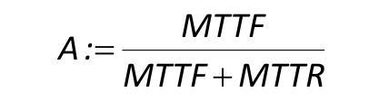

Fault(Guasto):deviazione non permessa di almeno una prorietà caratteristica(feature) del sistema dalla condizione usuale/tipica/accettabile- è uno stato del sistema
- condizione anormale che può causare riduzione o perdita delle prestazioni
- può provocare un fallimento(failure) o un malfunzionamento(malfanction)
Failure(Fallimento): un interruzione permanente della capacità di un sistema di eseguire una funzione richiesta sotto specifiche condizione operative- è un evento
- è il risultato di uno o più fault
Malfunction(Malfunzionamento): una irregolarità intermittente nel soddisfacimento di una funzione desiderata del sistema- è un evento
- è il risultato di uno o più fault
Tipi di segnali nella diagnosi:
Errore: differenza tra il valore calcolato o misurato ed il valore teoricamente corretto
Disturbo: ingresso sconosciuto che agisce sul sistema
Perturbazione: ingresso che agisce sul sistema e causa una temporanea deviazione dallo stato attuale
Residuo:indicatore della presenxa di un fault(differenza tra misure e valore calcolato dai modelli)
sintomo:variazione dal valore nominale
I tipi di funzioni nella diagnosi dei fault sono rinchiusi nella fault diagnosis:
Fault diagnosis (FD): determinazione della tipologia, dimensione, posizione e tempo d’individuazione del fault; include
i seguenti passi sequenziali:
1. Fault detection (FD): determinazione dei fault e degli istanti di rilevamento;
2. Fault isolation (FI): determinazione della tipologia, posizione e tempo d’individuazione del fault;
3. Fault identification (FId): determinazione della dimensione e del comportamento tempo variante di un fault.
Reliability(AFFIDABILITÀ): capacità di un sistema di realizzare unafunzione richiesta sotto specifiche condizione e in un dato periodo di tempo- può essere affetta da malfunction e failure
- una sua misura può essere il MMTF
Safety(sicurezza): capacità di un sistema di non recare danni a cose ,persone o all'ambiente- può essere vista come uno stato dove il rischio non supera un limite di rischio fissato
- un incremento della reliability generalmente porta a un incremento della safety
- un incremento della safety non sempre porta au un incremento della reliability
Availability(Disponibilità):probabilità che un sistema operi in maniera soddisfacente ed effcente in qualunque istante di tempo- può essere misurata come:

- per un alta availability occorre incrementareil MMTF e diminuire MMTR
- fault detection e fault diagnosis con manutenzione su richiesta in genere migliora la disponibilità
Lo sviluppo di un sistema di fault diagnosis può essere rapresentato da un diagramma a V:- Scelta dei reguisiti: individuazione delle funzioni attese, tipo i fault che devono essere diagnosticati
- scelta delle specifiche:parti, sensori,attuatori, potenza di calcolo..
- il sistema di fault diagnosis viene ideato a partire da un modello del processo,de i segnali ,dei fault
- il sistema viene testato in simulazione e poi implementato a livello hardware
- il sistema è testato e affinato tramite procedure hardware in the loop
- il sistema viene verificato e, quindi validato,

MIL (Model In the Loop): processo e sistema di supervisione sono realizzati all’interno di un software di simulazione
(e.g. Matlab);
SIL (Software In the Loop): il sistema di supervisione è implementato col codice/linguaggio dell’hardware di sviluppo
e testato nella simulazione (e.g. codice C);
HIL (Hardware In the Loop): il sistema di supervisione è im-
plementato nell’hardware (scheda embedded) e testato in
simulazione (ARM + Linux RT);
PIL (Process In the Loop): il processo simulato viene sostitui-
to dal processo reale e testato sul prototipo.